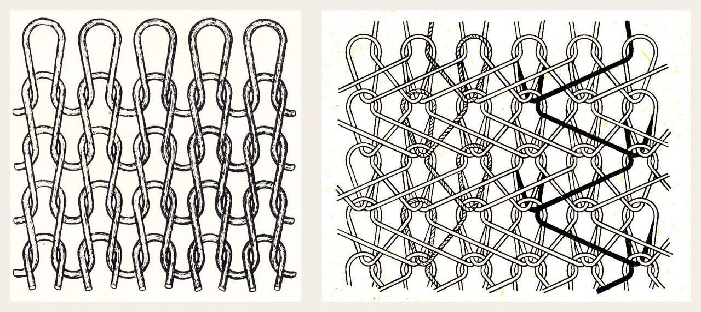
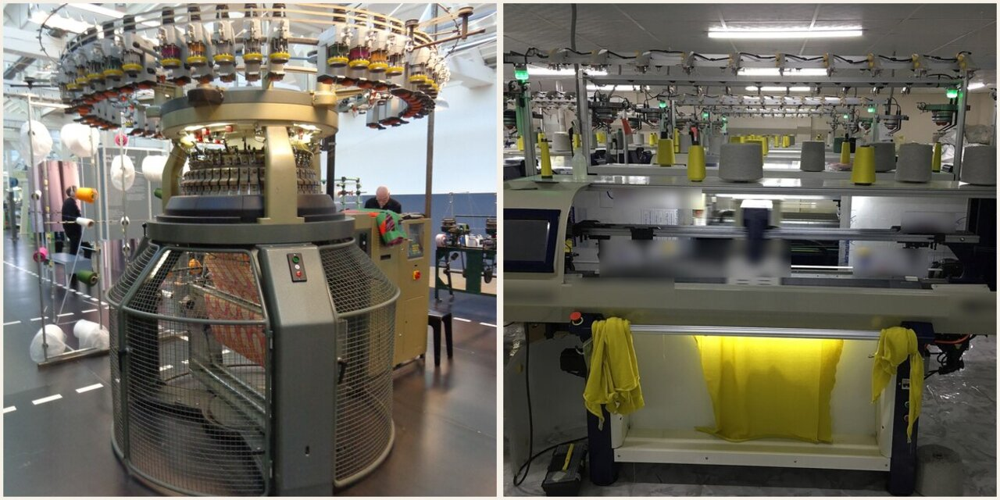
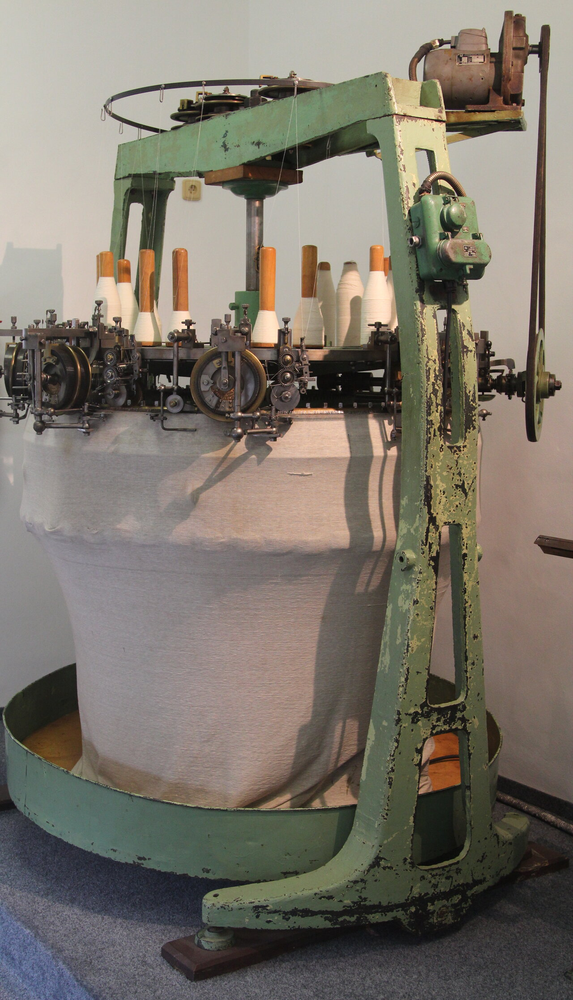
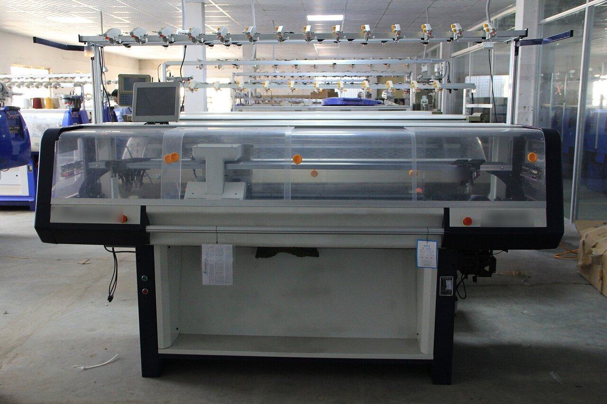
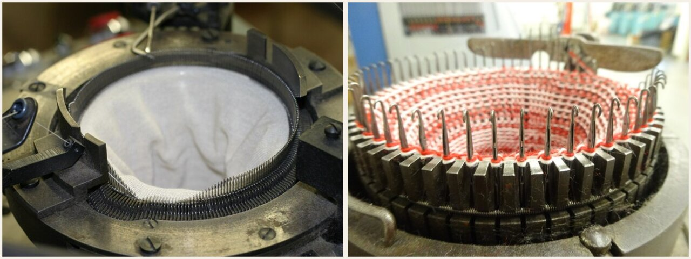
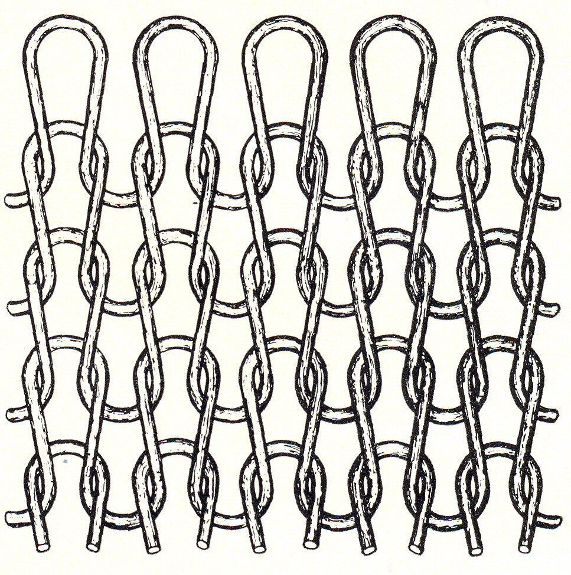

교육자료 · 편직
실로 고리를 이어서 원단을 만든다. 티셔츠 공장은 대부분 위편·환편(다이마루). 먼저 경편 vs 위편, 환편 vs 횡편을 보고, 그다음 현장 원단칸 이름을 본다.
옛 자료도 먼저 경편성물 / 위편성물로 나눈다. 티셔츠 밀은 위편·환편이 본선. 경편(트리코·라셸)은 옆칸.

실이 가로로 가서 고리를 만든다. 신축이 크고 풀리기 쉽다. 티·양말·립. 환편·횡편·양말기가 여기.
여러 실이 세로로 동시에 고리를 만든다. 더 안정·잘 안 풀림. 트리코·라셸. 환편 티 본선이 아니다.
코스=가로 한 줄(단), 웨일=세로 한 줄(코). 자료·바이어 영문.



바늘이 둥근 실린더에 있어 통(튜브) 생지가 나온다. 티셔츠 양산. 바디사이즈·개폭 둘 다 있다.
지붕형(V베드) 바늘대. 캐리지가 좌우로 움직여 개폭 편지. 성형·패션 니트. 그래도 위편이다(경편이 아니다).
공개 구조: 위편=한/소수 실이 가로(코스), 경편=바늘마다 실이 세로. 환편 더블=실린더+다이얼. 게이지=1인치당 바늘. 웹 확인은 README.
원단 종류 맛보기: 싱글(겉에 작은 V자 고리가 줄지어 있음) · 줄무늬(색실을 바꿔 가로 줄) · 이면 루프(안쪽에 작은 고리가 빽빽함) · JQD(두 색 실로 무늬). 실물은 원단칸 견본으로 본다.
티셔츠 환편 원단칸: 싱글(민무늬) · JQD(두 색 무늬) · 멀티JQD(여러 색 무늬) · 한기장 댕깡(줄무늬) · 쮸리(안쪽 면, 굵은 고리) · 미니쮸리(안쪽 고리가 훨씬 작음). 쮸리와 미니쮸리는 고리 크기로 구분한다. 댕깡은 원단칸 속칭이다. 기종은 원단표·작지를 본다.
기본 티 원단. 앞뒤가 다르고 가장자리가 말린다.
이름: single jersey · S/PLAIN
바늘이 골라서 문양. 프린트가 아니다.
이름: electronic jacquard · 샵: 컴퓨터
선염 2도 이상 자카드. 공개 카탈로그 예: JQD선염 2~5도. 공장 색수(도수)는 작지·바이어를 본다.
몸통 한 기장짜리 선염 줄무늬. 속칭이지 기종 확정이 아니다.
이름: feeder-repeat stripe
겉은 평평, 안쪽에 고리. 타올처럼 깎은 가공이 아니다.
이름: french terry
루프가 더 작거나 가벼운 쮸리. 공개 카탈로그는 싱글·스트라이프 계열에 둔다. 블로그 GSM을 공장 스펙으로 쓰지 않는다.
앞뒤가 다른 특양면. 인터록이라고 덮지 않는다.
이름: double-face
쉬운 말 먼저. 작지=현장말, 바이어·교육=둘을 같이. 한쪽으로만 쓰지 않는다. 다이마루=환편.
| 현장말 | 교육말 | 한데 묶으면 안 되는 말 | 어디에 쓰나 |
|---|---|---|---|
| 쮸리 | french terry / 프렌치테리 | 타올 컷파일 테리 | 작지 원단칸 / 교육은 둘 다 |
| 사카리바 | 특양면 / double-face | 인터록 | 작지 / 교육은 특양면도 적음 |
| 댕깡 | 선염 스트라이프 원단칸 속칭 | auto-striper 기종 | 원단표만. 기종은 작지 |
| 후라이스 | 1x1 립 / 시보리 | 후리스(fleece) | 넥·커프. 후리스와 다른 말 |
| 분또 | ponte 이중지 | 담보루와 같음 | 이중지. 삼중지(담보루)와 분리 |
| 양면 | 샵에선 립이기도 인터록이기도 | 양면=항상 인터록 | 작지 확인 |
| JQD / 컴퓨터 | electronic jacquard | 프린트 문양 | 바늘 선택 |
| 피케이/PQ | weft-knit pique (tuck) | 경이중직 우븐 피케로 덮음 | 티셔츠는 위편 턱 |
| 실켓 | mercerize (머서라이즈) | 겉을 태우는 가공 | 가스싱잉(그을림)과 다름. 옛 자료 오류 |
| 다이마루 | 환편 | — | 봉제 현장말 |
| 메리야스 | 니트/편성물 | — | 봉제 현장말 |
| 에리 | 칼라/깃 | — | 봉제 |
| 소데 | 소매 | — | 봉제 |
| 시보리 | 립/리브 (넥·커프·헴) | 홀치기 염색만으로 덮음 | 자료 Ⅴ는 염색 뜻도 적음. 티셔츠에선 립 |
| 선염 | yarn-dye / 사염 | — | 실 먼저 |
| 후염 | piece-dye / 포염 | — | 생지 후 |
교육말은 바이어·자료 영문. 현장말은 작지. 이 페이지는 둘을 같이 적는다.
옛 자료 실켓=원단 겉을 살짝 태운다 → 틀림. 그건 가스 싱잉. 실켓=머서라이즈(NaOH).
옛 자료 쮸리=특양면 안쪽을 타올처럼 가공 → 틀림. 쮸리=프렌치테리 조직. 타올 컷파일이 아니다. 특양면 후가공이 아니다.
| 원단칸 | English | 바늘대 | 티셔츠에서 | 주의 |
|---|---|---|---|---|
| 싱글 | S/PLAIN / single jersey | cylinder + sinker | 기본 티, 가장자리 컬 | 다이얼 없음 |
| JQD | electronic jacquard | 싱글 전자 자카드가 흔하다 | 바늘 선택 문양 티 | 프린트가 아니다. 샵: 컴퓨터 자카드 |
| 멀티JQD | 선염 자카드 2~5도 (catalog example) | 자카드 | 선염 문양 | 공개 예 2~5도. 공장 도수는 작지·바이어 |
| 한기장 댕깡 | feeder-repeat stripe (shop nickname) | 미확정 | 몸통 한 기장 스트라이프 | 원단칸 속칭. 기종은 작지 |
| 쮸리 | french terry | 싱글 3사 흔하다 | 이면 루프 티·맨투맨 감 | 타올 컷파일 테리가 아니다. (쭈리와 같은 칸) |
| 미니쮸리 | mini french terry | 싱글 계열 | 가벼운 루프 | 블로그 GSM을 공장 스펙으로 쓰지 않는다 |
| 사카리바 | double-face (특양면) | 더블 계열(바인더) | 앞뒤가 다른 티 | 인터록과 한데 묶지 않는다. 어원 미확정 |
주의: 댕깡=auto-striper 기종, 사카리바=인터록, 쮸리=타월 테리. 원단칸 속칭과 설비를 한 줄로 묶지 않는다.
본선 7칸은 작지에 자주 나오는 칸. 아래는 환편 샵에서 같이 도는 종류. 한 공장이 전부 짠다고 보지 않는다. 보유·생산 품목은 작지를 본다.
| 원단칸 | English | 바늘대/계열 | 티셔츠에서 | 주의 |
|---|---|---|---|---|
| 싱글 | S/PLAIN / single jersey | cylinder + sinker | 기본 티, 가장자리 컬 | 다이얼 없음 |
| PQ 피케 | pique | 싱글 4트랙 턱 | 폴로·하계 티 표면 요철 | 가노꼬=일본 속칭 |
| 싱글 포인텔 | single pointelle | 싱글 miss/tuck | 얇은 구멍 문양 티 | JQD 포인텔과 칸을 섞지 않는다 |
| 싱글 엠보싱 | single emboss | 싱글 턱 요철 | 표면 엠보 티 | 프린트 엠보가 아니다 |
| 메쉬(싱글) | single mesh | 싱글 메쉬 | 통기 티·이너 | 아일렛 메쉬와 칸을 섞지 않는다 |
| 원단칸 | English | 바늘대/계열 | 티셔츠에서 | 주의 |
|---|---|---|---|---|
| 쮸리 | french terry | 싱글 3사 흔하다 | 이면 루프 티·맨투맨 감 | 타올 컷파일 테리가 아니다. (쭈리와 같은 칸) |
| 미니쮸리 | mini french terry | 싱글 계열 | 가벼운 루프 | 블로그 GSM을 공장 스펙으로 쓰지 않는다 |
| 3단쮸리 | 3-thread terry (shop name) | 쮸리 계열 | 두꺼운 루프 감 | GSM은 작지·바이어 |
| 헤비쮸리 | heavy french terry (shop nickname) | 쮸리 계열 | 중량 감 티 | 중량 속칭. GSM은 작지·바이어 |
| 기모쮸리 | brushed french terry | 조직은 쮸리, 기모는 후가공 | 안감 기모 티 | 기모=후가공. 조직을 후리스로 바꾸지 않는다 |
| 원단칸 | English | 바늘대/계열 | 티셔츠에서 | 주의 |
|---|---|---|---|---|
| 피더 스트라이프 | feeder stripe | 급사구 리피트 | 좁은 선염 줄 티 | 한기장 댕깡과 한 줄로 묶지 않는다 |
| 한기장 댕깡 | feeder-repeat stripe (shop nickname) | 미확정 | 몸통 한 기장 스트라이프 | 원단칸 속칭. 기종은 작지 |
| PQ 스트라이프 | pique stripe | 피케+스트라이프 | 폴로 줄무늬 | 피케 조직 위 선염 |
| 쮸리 스트라이프 | french terry stripe | 쮸리+스트라이프 | 이면 루프 줄무늬 | 후렌치테리 스트라이프 |
| 원단칸 | English | 바늘대/계열 | 티셔츠에서 | 주의 |
|---|---|---|---|---|
| JQD | electronic jacquard | 싱글 전자 자카드가 흔하다 | 바늘 선택 문양 티 | 프린트가 아니다. 샵: 컴퓨터 자카드 |
| 멀티JQD / JQD선염2~5도 | 선염 자카드 2~5도 (catalog example) | 자카드 | 선염 문양 | 공개 예 2~5도. 공장 도수는 작지·바이어 |
| JQD양면 | double-knit jacquard | 더블 자카드 | 양면 문양 티 | 싱글 JQD와 다름. 양면≠항상 인터록 |
| JQD 포인텔 | jacquard pointelle | 자카드 구멍 | 구멍 문양 티 | 싱글 포인텔과 구분 |
| JQD 허니컴 | jacquard honeycomb | 자카드 허니컴 | 벌집 요철 티 | 조직 자카드. 프린트가 아니다 |
| JQD 후라이스 | jacquard 1x1 rib | 립 자카드 | 넥·몸통 문양 립 | 후라이스는 후리스가 아니다 |
| 아일렛 / 아일렛JQD | eyelet / eyelet jacquard | 아일렛 계열 | 구멍 조직 티 | 메쉬·포인텔과 칸을 바로 합치지 않는다 |
| 아일렛 립 · 아일렛 메쉬 · 아일렛 골지 | eyelet rib/mesh/rib | 아일렛 계열 | 구멍 립·메쉬·골지 | 한 줄로 묶인 변종. 칸을 따로 나누지 않는다 |
| 원단칸 | English | 바늘대/계열 | 티셔츠에서 | 주의 |
|---|---|---|---|---|
| 립 / 후라이스 / 시보리 | 1x1 rib | 실린더+다이얼 | 넥·커프·헴 | 1x1을 후라이스라 함. 시보리=용도. 후리스가 아니다 |
| 골지 2x1·2x2·와이드립 | 2x1 / 2x2 / wide rib | 립 계열 | 골이 큰 티·커프 | 1x1 후라이스와 칸이 다름 |
| 인터록 | interlock | 더블, 마주보는 게이팅 | 두꺼운 티·이너, 컬 적음 | 샵 '양면'이 립이기도 인터록이기도 — 작지 확인. 양면≠항상 인터록 |
샵 '양면'이 립을 가리키기도, 인터록을 가리키기도 함. 작지에서 어떤 양면인지 확인.
| 원단칸 | English | 바늘대/계열 | 티셔츠에서 | 주의 |
|---|---|---|---|---|
| 사카리바 | double-face (특양면) | 더블 계열(바인더) | 앞뒤가 다른 티 | 인터록과 한데 묶지 않는다. 어원 미확정 |
| 분또 / 폰트 (이중지) | ponte (double-knit) | 더블 이중지 | 탄탄한 티·원피스 감 | 담보루(삼중지)와 다름 |
| 담보루 (삼중지) | triple-knit (shop: 골판지) | 삼중지 | 두꺼운 구조 티 | 골판지 속칭. 분또와 다름 |
| 와플 | waffle | 특양면/요철 | 와플 격자 티 | 피케·허니컴과 바로 합치지 않는다 |
| 오토만 | ottoman | 가로 골 | 가로 골 티 | 와이드립과 혼동 주의 |
| 시어서커 | seersucker knit | 요철 수축 | 하계 요철 티 | 직물 시어서커가 아님(편직) |
| 네오플랜 | neoplan (shop nickname) | 특양면 속칭 | 특양면 티 | 특양면 속칭. 구조는 작지 확인 |
옆에 적고 본선·샵 그룹과 섞지 않는다. 환편 티 원단칸이 아니다.
| 원단칸 | English | 바늘대/계열 | 티셔츠에서 | 주의 |
|---|---|---|---|---|
| 3사 후리스 | 3-thread fleece | 싱글 3사 후리스기 | 기모 후리스 감 | 쮸리(프렌치테리)와 구분. 저지 본선이 아니다 |
| 펄 / links-links | purl / links-links | 더블 실린더 등 특수 | 양면 펄 조직 | 티셔츠 본선이 아니다 |
| 경편 트리코·라셸 | warp knit tricot / raschel | 경편 | 경편 원단 | 환편 원단이 아니다 |
주의: 댕깡=auto-striper 기종, 사카리바=인터록, 쮸리=타월 테리. 원단칸 속칭과 설비를 한 줄로 묶지 않는다.
티 솔리드 기본. 흡수·구김. 수는 높을수록 실이 가늘고 원단이 얇아 보이는 경향(공개). 16/20/30/40수는 자료 예. 공장 사용 수는 작지를 본다.
머서라이즈. 광택·촉감. 약실켓=라이트. 겉 태우기 아님(가스싱잉과 분리).
샵 말. 앞뒤가 비슷한 더블(인터록 후보). 립이기도 함. 작지 확인. 양면≠항상 인터록.
사카리바. 앞뒤가 다르고 바인더. 자료 '양면보다 두껍고 쮸리보다 얇다'는 감 표현일 뿐 GSM은 작지·바이어. 폴리 혼용 여부는 작지.
ponte 이중지. 자료 '양면과 같은데 폴리 많음'으로 끝내지 않는다. 담보루(삼중지)와 분리.
표면 평편+이면 루프, french terry. 3사 흔하다. 타올 가공이 아니다. 특양면의 후가공이 아니다.
조직이 아니라 후가공(브러시). 기모쮸리=쮸리 조직+기모. 후리스(3사기)와 칸 섞지 않는다.
티셔츠 PQ=위편 턱 피케. 자료 '경이중직'은 우븐 피케 말. 티 칸에 우븐으로 덮지 않는다. 가노꼬=일본 속칭.
디스퍼스/원착. 흡습 낮음. C/P는 두 섬유.
fleece. 후라이스(립)와 다른 말. 저지 본선이 아니다.
삼중지. 분또와 분리.
선염 스트라이프 속칭. 기종은 작지를 본다.
S/PLAIN. 본선 7칸 기본.
Ⅰ 깅엄·옥스포드·벨벳 등은 우븐/홈패션 자료. 이 페이지 본선이 아니다.
실린더가 돌고 래치 바늘이 루프를 만들며 튜브 생지(greige)가 아래로 감긴다. 생지 다음이 염색·가공이다. 편직 스펙과 가공 스펙을 분리해 적는다.
바디사이즈 환편 튜브는 여전히 흔하다. 옆솔기 없는 몸통. 개폭(open-width)도 같이 간다. 염색·텐터·와이드 마커용.
30" × 28G × 4F/inch 싱글 저지, 컴팩트 코튼, 엘라스테인 플레이팅. 바늘 수 ≈ π × 직경(인치) × 게이지. 30×28×3.1416 ≈ 2639본.
공개 샵에서 자주 보는 말: 4-track, electronic jacquard, auto-striper, compact cotton, elastane plating, recyclable polyester, digital knit design. auto-striper는 설비 종류일 뿐, 원단표 속칭 댕깡과 같다고 보지 않는다.

cylinder only. 다이얼 없음. 루프는 싱커(sinker)가 잡는다. 오픈탑·싱커기. 조직: jersey / S/PLAIN(single jersey plain), 피케(PQ), 피더 스트라이프, 싱글 전자 자카드.
cylinder + dial. 립·인터록·자카드. 표준 립·인터록은 다이얼 바늘이 루프를 잡아 싱커가 없는 경우가 많다. 펄(purl)은 특수(더블 실린더 등). 티셔츠 본단의 기본 더블은 립과 인터록.
옛 자료의 dail bed는 dial bed다. 다이얼은 더블 환편의 수평 바늘대.
싱글은 실린더에 수직, 더블은 다이얼에 수평 바늘이 더해진다. 4트랙은 knit / tuck / miss.
티셔츠 흔히 28G. 직경은 인치, 예 30". G를 번수와 섞지 않는다.
원사를 넣는 스테이션. 3F 또는 4F per inch가 흔한 양산. 한기장 스트라이프는 피더 리피트.
앞 V, 뒤 싱커루프. 가장자리 컬. 기본 티.
4트랙 턱 조합. 표면 요철, 폴로·하계 티.
실린더+다이얼. 1x1 / 2x2. 넥·커프·헴(시보리).
바늘이 마주보는 게이팅. 양면이 비슷하고 컬이 적다. 두꺼운 티·이너.
현대 티: 컴팩트 코튼, 엘라스테인 플레이팅, 재생 폴리, 전자 자카드·오토스트라이퍼, 디지털 니트 디자인.
원단표 닉네임. 공개 어원이 없으면 현장속칭으로만 둔다. 가짜 어원을 만들지 않는다. 싱가는 싱어 미싱이 아니다. 댕깡·싱가·싱컴은 기종 미확정.
| 현장속칭 | 상태 | 매핑 | 한국어 | 메모 |
|---|---|---|---|---|
| 컴퓨터 | 현장속칭 (업계 통용) | electronic / computer jacquard | 전자 자카드 | 판매명 컴퓨터 자카드 환편기. 가짜 어원 없음. |
| 댕깡 | 현장속칭 (기종 미확정) | 원단표 기종란 표기 | 확정하지 않는다 | 선염표에 컴퓨터/싱컴/싱가와 나란히 적힘. 오토스트라이퍼라고 보지 않는다. 어원 미확정. 작지·원단표를 본다. |
| 싱컴 | 현장속칭 (기종 미확정) | 원단표 기종란 표기 | 확정하지 않는다 | 공개 웹에서 어원 확정 못 함. 지어내지 않는다. 싱글 컴퓨터 자카드로 읽는 현장도 있으나 기종은 작지·원단표를 본다. |
| 싱가 | 현장속칭 (기종 미확정) | 원단표 기종란 표기 | 확정하지 않는다 | 싱어 미싱과 헷갈리면 안 된다. 싱글저지 후보는 있으나 공개 웹 어원 없음. |
댕깡을 auto-striper(선염 스트라이프 전용기)로 매핑하지 않는다. 현장속칭·기종 미확정으로만 둔다.
| 옛 표기 | 지금 | English | 근거 |
|---|---|---|---|
| dail bed / 데일 베드 | dial bed | Dial bed | 옛 자료 오탈자. 더블 환편의 수평 바늘대. |
| 싱글 환편 = 한 면 | 실린더만 + 싱커 | Cylinder only / jersey | 오픈탑 싱커기. 다이얼 없음. |
| 더블 환편 = 양면 | 실린더+다이얼 | Cylinder + dial | 립·인터록·자카드. 펄은 특수기. |
| 급사구 | 급사구 (피더) | Feeder | 원사를 바늘에 넣는 스테이션. 인치당 3~4F가 흔한 티셔츠기. |
| 게이지 / G | 게이지 예: 28G | Gauge (needles per inch) | 1인치당 바늘 수. 직경은 인치(30인치). |
| 생지 | 생지 / 그레이지 | Greige | 염색 가공 전 편직 원단. |
| S/PLAIN | 싱글 저지 플레인 | Single jersey plain | 티셔츠 기본 조직. |
| 한기장 스트라이프 | 피더 스트라이프 | Feeder stripe | 급사구 수에 묶인 선염 리피트. 넓은 리피트는 오토스트라이퍼. |
| PQ | 피케 | Pique | tuck surface. polo. |
| 4 truck | 4트랙 | 4-track | knit tuck miss cams. |
| 컴퓨터 | 전자 자카드 | Electronic jacquard | needle selection. digital knit design. |
| 바디사이즈 환편 | 바디사이즈 | Body-size circular knit | 튜브 티는 여전히 흔하다. 개폭도 같이. |
| 스판 넣기 | 엘라스테인 플레이팅 | Elastane plating | plated spandex on chosen feeders. |
| 컴팩트사 | 컴팩트 코튼 | Compact cotton | low hairiness for high speed. |
| 리사이클 PET | 순환 폴리에스터 | Recyclable polyester | mono-material tee programs. |
도식 SVG: warp-vs-weft · circular-vs-flat · single-vs-double · knit-plain/type-map (영문 라벨).
바디사이즈 환편 티셔츠: 몸통 둘레에 맞춘 통 원단을 써서 옆솔기가 없다.
환편기 수직 단면: 가운데 바늘 통(실린더) 둘레에 세로 바늘이 꽂혀 있고, 더블 기계는 그 위에 수평 바늘판(다이얼)을 하나 더 얹는다. 짠 통 원단은 실린더 안쪽으로 내려간다.

공개 교육 링크(텍스트만 · iframe 없음).
외부 영상은 제3자 콘텐츠. 공장 기종·레시피로 쓰지 않는다.
이 페이지 숫자로 공장 규격을 정하지 않는다. 작지·바이어 스펙을 본다.
기종·도수·GSM·보유 품목은 이 페이지로 정하지 않는다. 원단표·작지·바이어를 본다.
환편 티=위편. 경편(트리코·라셸)은 옆칸.
환편·횡편·양말기=위편. 경편만 제외하면 위편.
싱글 = cylinder only. 다이얼 없음.
게이지=needles per inch. 직경은 인치.
급사구 = feeder.
S/PLAIN=single jersey plain. PQ=pique.
공개 어원·기종 매핑이 갈린다. 댕깡/싱가/싱컴 모두 기종 미확정. 작지·원단표를 본다.
쮸리 = french terry. 3사 구성이 흔하다. 타월 테리가 아니다.
사카리바 = 특양면(double-face). 인터록과 한데 묶지 않는다. 어원 미확정.
한기장 = feeder repeat(몸통 한 기장). 댕깡 = 원단칸 속칭. 기종 미확정.
후라이스 = 1x1 rib. 시보리 계열. 후리스(fleece)와 다른 말.
분또/폰트=ponte 이중지. 담보루=삼중지(골판지 속칭). 한 칸으로 묶지 않는다.
실켓=머서라이즈(NaOH). 겉을 태우는 것은 가스싱잉. 옛 자료 오류.
쮸리 = french terry. 타올 컷파일이 아니다. 특양면 후가공이 아니다.
작지·원단칸·봉제 지시=현장말. 이 교육 페이지는 현장말과 교육말을 나란히.